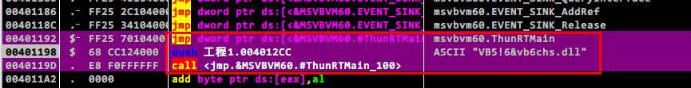
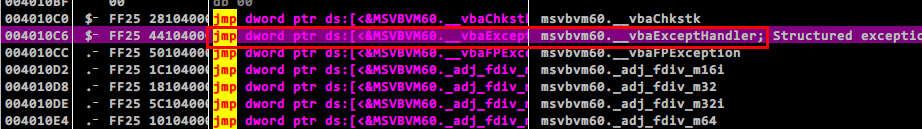
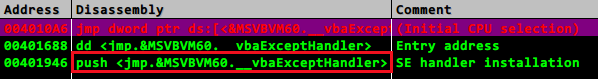
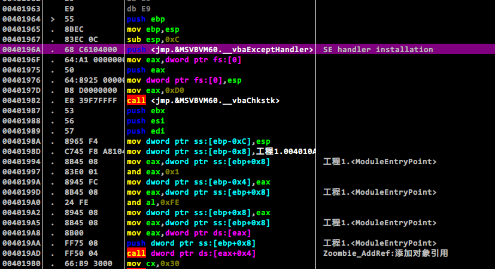
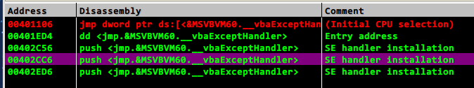
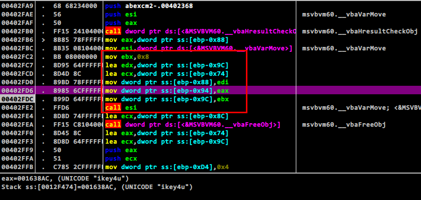
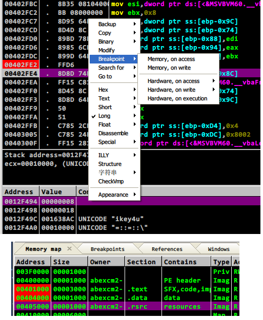
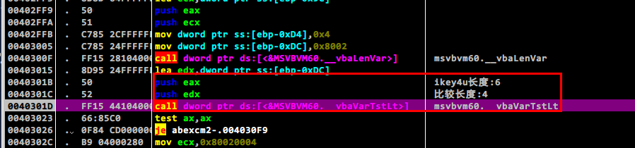
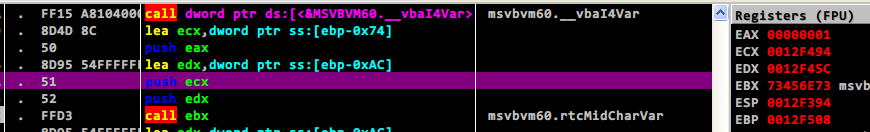

目录:
环境:
Ubuntu 14.04 x64 + VMWare 12.0[Windows XP SP3 + Visual Basic 6.0 + OllyDbg 1.10(以下OD简称之)]
吐槽部分
最初参考了这篇文章[浅谈VB6逆向工程],
以及逆向工程核心原理这本书,此篇作为我对于VB逆向的入门文章.
需要说明的是,上面的参考文章中,对于Dim a,b,c As Integer这样的语句:
如果在Visual Basic 6.0中编译,那么默认的a,b变量均为Variant,而仅仅有c才为要定义的Integer类型.
如果使用VB .NET(使用Visual Studio 2005以上VS版本)编译的话,则将a,b,c均视作Integer类型.
最初我使用了Visual Basic 6.0编译,按照参考文章刚好跳进坑里,因为我认为a,b,c均为Integer类型的,而实际上再VB6.0中并不是!
想想参考原文章花费了几天时间做这玩意儿,结果全是错的,简直全是泪,如今从头再做一边:雄关漫道真如铁,而今迈步从头越!废话不说,再做一遍!
0x01.VB反汇编基础
为了了解基本的VB反汇编,我们自己写源码,然后编译,对照源码和汇编代码分析已知和未知之间的联系以及区别.这是一种有效的学习逆向的方法.
代码修改自[浅谈VB6逆向工程],如下所示:
Private Sub Form_Load()
Dim a As Byte
Dim b As Integer
Dim c As Long
Dim d As Boolean
Dim e As String
Dim f As Date
Dim g As Double
Dim h As Single
Dim v1 As Variant
Dim v2 As Variant
Dim v3 As Variant
Dim v4 As Variant
Dim v5 As Variant
Dim v6 As Variant
Dim v7 As Variant
Dim v8 As Variant
a = &H30 'VB中声明十六进制的方式:&H数字,这里声明一个十六进制数字0x30
b = 250
c = 40960
d = True
e = "hello"
f = Now '当前时间
g = 3.1415
h = 1.27
v1 = a
v2 = b
v3 = c
v4 = d
v5 = e
v6 = f
v7 = g
v8 = h
End Sub
1.无优化的代码
我们先来对无任何优化的代码反汇编,设置方法为:工程/工程属性/编译/编译为本机代码/无优化(默认为代码速度优化).
然后在默认的窗体(Form1)中加入上述代码并编译成EXE.

主要就是红色方框里面的三句,首先做的就是调用VB引擎的主函数ThunRTMain(),该函数的参数为RT_MianStruct结构体(PUSH压入该参数),
但是注意这里是通过一个JMP进行间接调用,通过JMP进行函数的间接调用,在一定程度上可以愚弄一般的静态反编译器.
跟着上面三条语句一步步跟随,你就进入VB引擎迷林了.怎么快速找到入口代码呢?看下图:

从ThunRTMain函数网上找,有很多的jmp MSVBVM60.XXX,不是很长的一段距离后,就会找到jmp vbaExceptHandler语句(就是红色方框中的那句),光标定位到该语句,
依次[鼠标右键/Find Referencec to/Selected command]或者Ctrl+R快捷键来到下图:

双击SE handler installation行即可进入入口点附近,在例程入口点开始处下断点,然后F9便可运行到断点处.
当然如果有多个这样的SE Handler installation,那么每一个都下上断点即可.当前这个例子仅有一个.我们到达的入口点处的代码看起来就像下图:

1.1 第一部分
这一部分的代码相当典型,这里仅仅做简要分析:
00401964 > \55 push ebp
00401965 . 8BEC mov ebp,esp
00401967 . 83EC 0C sub esp,0xC
压栈并开辟局部变量空间.
0040196A . 68 C6104000 push <jmp.&MSVBVM60.__vbaExceptHandler>
0040196F . 64:A1 0000000>mov eax,dword ptr fs:[0]
00401975 . 50 push eax
00401976 . 64:8925 00000>mov dword ptr fs:[0],esp
FS段寄存器也被称为段选择符,它的值为段描述表(SDT:Segment Descriptor Table)的索引(简单来说,FS相当于一个游标指向数组SDT的某一个位置),
而SDT表的起始地址存储在一个称为全局表描述表的寄存器(Global Descriptor Table Register)中.FS:[val]就表示FS寄存器中的值加上val,或者说就等价于FS[val].
这里的fs:[0]用于选择SEH(Structure Exception Handler)链首地址,该段代码的作用就是:生成SEH结点添加到SEH链
0040197D . B8 D0000000 mov eax,0xD0
00401982 . E8 39F7FFFF call <jmp.&MSVBVM60.__vbaChkstk>
00401987 . 53 push ebx
00401988 . 56 push esi
00401989 . 57 push edi
0040198A . 8965 F4 mov dword ptr ss:[ebp-0xC],esp
0040198D . C745 F8 A8104>mov dword ptr ss:[ebp-0x8],工程1.004010A8
00401994 . 8B45 08 mov eax,dword ptr ss:[ebp+0x8]
00401997 . 83E0 01 and eax,0x1
0040199A . 8945 FC mov dword ptr ss:[ebp-0x4],eax
0040199D . 8B45 08 mov eax,dword ptr ss:[ebp+0x8]
004019A0 . 24 FE and al,0xFE
004019A2 . 8945 08 mov dword ptr ss:[ebp+0x8],eax
004019A5 . 8B45 08 mov eax,dword ptr ss:[ebp+0x8]
004019A8 . 8B00 mov eax,dword ptr ds:[eax]
004019AA . FF75 08 push dword ptr ss:[ebp+0x8]
生成VB实例对象的准备例程,一般的例程代码,应由编译器添加.略过(其实是我并没有完全看懂它想弄啥~~哈哈).
004019AD . FF50 04 call dword ptr ds:[eax+0x4]
Zombie_AddRef函数添加对象引用,调用代码也很特别,典型的CALL DWORD DS:[EAX+0x4]啊!
1.2 第二部分
//a=&H30
004019B0 . 66:B9 3000 mov cx,0x30
004019B4 . E8 C1F7FFFF call <jmp.&MSVBVM60.__vbaUI1I2>
004019B9 . 8845 98 mov byte ptr ss:[ebp-0x68],al
//b=250(0xFA)
004019BC . 66:C745 84 FA>mov word ptr ss:[ebp-0x7C],0xFA
//c=40960(0xA000)
004019C2 . C785 70FFFFFF>mov dword ptr ss:[ebp-0x90],0xA000
//d=True(赋予-1)
004019CC . 66:838D 5CFFF>or word ptr ss:[ebp-0xA4],0xFFFF
//e="hello"
004019D4 . BA 1C164000 mov edx,工程1.0040161C ; UNICODE "hello"
004019D9 . 8D8D 58FFFFFF lea ecx,dword ptr ss:[ebp-0xA8]
004019DF . E8 90F7FFFF call <jmp.&MSVBVM60.__vbaStrCopy>
//f=Now
004019E4 . 8D85 34FFFFFF lea eax,dword ptr ss:[ebp-0xCC]
004019EA . 50 push eax
004019EB . E8 78F7FFFF call <jmp.&MSVBVM60.#rtcGetPresentDate_546>
004019F0 . 8D85 34FFFFFF lea eax,dword ptr ss:[ebp-0xCC]
004019F6 . 50 push eax
004019F7 . E8 72F7FFFF call <jmp.&MSVBVM60.__vbaDateVar>
004019FC . DD9D 50FFFFFF fstp qword ptr ss:[ebp-0xB0]
00401A02 . 8D8D 34FFFFFF lea ecx,dword ptr ss:[ebp-0xCC]
00401A08 . E8 55F7FFFF call <jmp.&MSVBVM60.__vbaFreeVar>
需要详细解释一下日期的存放,也就是f=Now语句,如下的代码用于获取当前时间,存储于EAX所指地址(ebp-0xCC):
004019E4 . 8D85 34FFFFFF lea eax,dword ptr ss:[ebp-0xCC]
004019EA . 50 push eax
004019EB . E8 78F7FFFF call <jmp.&MSVBVM60.#rtcGetPresentDate_546>
CALL执行前,使用命令dd eax在CALL执行前后分别查看内存,如下:
0012FA48 00000000 | 0012FA48 00120007
0012FA4C 00000000 | 0012FA4C 73506AA0
0012FA50 00000000 | 0012FA50 88B9141A
0012FA54 00000000 | 0012FA54 40E4BC0F
很显然数据变动的是16B.我们有理由推测这是一个结构体.但是结构体到底是什么,则还有待探究.接着就是下面的代码:
004019F0 . 8D85 34FFFFFF lea eax,dword ptr ss:[ebp-0xCC]
004019F6 . 50 push eax
004019F7 . E8 72F7FFFF call <jmp.&MSVBVM60.__vbaDateVar>
用于获取日期的引用,引用将会作为结果存放于EAX中返回.CALL调用后,执行dd eax查看内存如下:
0012FA08 C6D70007
0012FA0C 0000001A
0012FA10 88B9141A
0012FA14 40E4BC0F
我们发现数据的前8个字节变化了,而后8个字节却没有变化.接着执行:
004019FC . DD9D 50FFFFFF fstp qword ptr ss:[ebp-0xB0]
fstp指令用于存储浮点数,其源操作数来自于eax,执行完毕后栈将会执行一次POP操作.执行前后使用dd ebp-0xB0查看内存:
0012FA64 00000000 |0012FA64 88B9141A
0012FA68 00000000 |0012FA68 40E4BC0F
至此,我们有理由可以推得,存储的数据应该就是日期了(以浮点形式呈现),也就是说后8个字节应该为要操作的数据,而前面的8个字节起到辅助作用.
最后释放中间变量(由rtcGetPresentDate_546产生):
00401A02 . 8D8D 34FFFFFF lea ecx,dword ptr ss:[ebp-0xCC]
00401A08 . E8 55F7FFFF call <jmp.&MSVBVM60.__vbaFreeVar>
这个似乎没有什么值得说的.接下来我们要来看一看浮点数:
//g=3.1415
00401A0D . DD05 A0104000 fld qword ptr ds:[0x4010A0]
00401A13 . DD9D 48FFFFFF fstp qword ptr ss:[ebp-0xB8]
//h=1.27
00401A19 . D905 98104000 fld dword ptr ds:[0x401098]
00401A1F . D99D 44FFFFFF fstp dword ptr ss:[ebp-0xBC]
先来说一下浮点数在计算机中的存储,一般的都是采用IEEE 754标准,其约定简述如下:
[符号位][指数部分][尾数部分]
一个浮点数=符号位*有效数字*2^指数值
64bit浮点数各部分分配的bit数为:1/11/52
32bit浮点数各部分分配的bit数为:1/8/23
对于指数,IEEE 754规定指数值的真实值必须加上一个中间数进行存储.
对于64位浮点数,其含有11位指数位,可表示范围0~2047,取中间值1023.
对于32位浮点数,则是0~255的中间数127.
其中有效数字总总是省略最前面的那个1(默认为1),如1.011只保留011到尾数中去.
现在我们来实践一下,从OD中查看变量g的值,复制出来如下:
0012FA5C 6F 12 83 C0 CA 21 09 40,借助python计算该值:
#! /usr/bin/python
#! -*- coding:utf-8 -*-
import struct
#逆序
hexstr=''.join('6F 12 83 C0 CA 21 09 40'.split(' ')[::-1])
#print bin(int(hexstr,16))
#小数转化为十六进制
val=struct.unpack('!d',hexstr.decode('hex'))[0]
print val
#print hex(struct.unpack('<Q', struct.pack('<d', val))[0])
简单解释一下,因为采用小端序存储,所以先逆序一下,然后呢借助struct将其以十六进制进行解码,便可得到实际的浮点数值.
另外拓展地,翻过来,怎么将一个浮点数转换为十六进制呢?最后一行注释便是答案.
此外注意这里struct里解码/编码浮点数取得是64bit的,对于32bit则需要做相应修改.
再接下来就是一系列的赋值操作了,为节省篇幅,其中省略了一部分:
//v1=a(Byte)
00401A25 . 8A45 98 mov al,byte ptr ss:[ebp-0x68]
00401A28 . 8885 2CFFFFFF mov byte ptr ss:[ebp-0xD4],al
00401A2E . C785 24FFFFFF>mov dword ptr ss:[ebp-0xDC],0x11
00401A38 . 8D95 24FFFFFF lea edx,dword ptr ss:[ebp-0xDC]
00401A3E . 8D4D DC lea ecx,dword ptr ss:[ebp-0x24]
00401A41 . E8 16F7FFFF call <jmp.&MSVBVM60.__vbaVarMove>
...
//v5=e(String)
00401AB3 . 8B85 58FFFFFF mov eax,dword ptr ss:[ebp-0xA8]
00401AB9 . 8985 2CFFFFFF mov dword ptr ss:[ebp-0xD4],eax
00401ABF . C785 24FFFFFF>mov dword ptr ss:[ebp-0xDC],0x8
00401AC9 . 8D95 24FFFFFF lea edx,dword ptr ss:[ebp-0xDC]
00401ACF . 8D4D 9C lea ecx,dword ptr ss:[ebp-0x64]
00401AD2 . E8 7FF6FFFF call <jmp.&MSVBVM60.__vbaVarCopy>
...
//v8=h(Single)
00401B22 . D985 44FFFFFF fld dword ptr ss:[ebp-0xBC]
00401B28 . D99D 2CFFFFFF fstp dword ptr ss:[ebp-0xD4]
00401B2E . C785 24FFFFFF>mov dword ptr ss:[ebp-0xDC],0x4
00401B38 . 8D95 24FFFFFF lea edx,dword ptr ss:[ebp-0xDC]
00401B3E . 8D8D 60FFFFFF lea ecx,dword ptr ss:[ebp-0xA0]
00401B44 . E8 13F6FFFF call <jmp.&MSVBVM60.__vbaVarMove>
这里都是变长变量的赋值,以其中的一个为例进行分析(Variant v1 = Byte a):
00401A25 . 8A45 98 mov al,byte ptr ss:[ebp-0x68] #1
00401A28 . 8885 2CFFFFFF mov byte ptr ss:[ebp-0xD4],al
00401A2E . C785 24FFFFFF>mov dword ptr ss:[ebp-0xDC],0x11 #2
00401A38 . 8D95 24FFFFFF lea edx,dword ptr ss:[ebp-0xDC] #3
00401A3E . 8D4D DC lea ecx,dword ptr ss:[ebp-0x24]
00401A41 . E8 16F7FFFF call <jmp.&MSVBVM60.__vbaVarMove>
在#1中,ebp-0x68即指向a的值,为一个字节,通过al传递给ebp-0xD4.
在#2中,0x11(=17)为Byte的类型
在#3中,是典型的lea edx,xxx,lea ecx yyy语句
最后的CALL函数将会把EDX中的变量移入到ECX所指的内存处.
在CALL执行前 | CALL执行后
-----------------------------------------------------------------------
EDX所指内存 ECX所指内存如下 | ECX所指内存如下:
0012FA38 00000011 0012FAF0 00000000 | 0012FAF0 00000011
0012FA3C 00000000 0012FAF4 00000000 | 0012FAF4 00000000
0012FA40 00000030 0012FAF8 00000000 | 0012FAF8 00000030
而且vbaVarMove的返回值为0x0012FAF0也就是赋值后变长变量v1的内存地址.以此便可以得知变长变量的内存存储如下:
类型(4B)/未知(4B)/值(8B),另外VB中各种变量的存储以及字长许多前辈门已经总结了,我归纳如下,格式为[名称/类型值/长度(字节)]:
Empty/0/?
Null/1/?
Integer/2/2B
Long/3/4B
Single/4/4B
Double/5/8B
Currency/6/8B
Date/7/8B
String/8/?
Ole Automation Obect/9/?
Error/0xA/?
Boolean/0xB/2B
Variant/0xC/16B
Object(非OLE自动化对象)/0xD/4B
Byte/0x11/1B
Array/0x2000(8192)/?
P.S.问号表示长度不定.
再往后呢?
//v1
00401B64 > \8D4D DC lea ecx,dword ptr ss:[ebp-0x24]
00401B67 . E8 F6F5FFFF call <jmp.&MSVBVM60.__vbaFreeVar>
//v2
00401B6C . 8D4D CC lea ecx,dword ptr ss:[ebp-0x34]
00401B6F . E8 EEF5FFFF call <jmp.&MSVBVM60.__vbaFreeVar>
//v3
00401B74 . 8D4D BC lea ecx,dword ptr ss:[ebp-0x44]
00401B77 . E8 E6F5FFFF call <jmp.&MSVBVM60.__vbaFreeVar>
//v4
00401B7C . 8D4D AC lea ecx,dword ptr ss:[ebp-0x54]
00401B7F . E8 DEF5FFFF call <jmp.&MSVBVM60.__vbaFreeVar>
//v5
00401B84 . 8D4D 9C lea ecx,dword ptr ss:[ebp-0x64]
00401B87 . E8 D6F5FFFF call <jmp.&MSVBVM60.__vbaFreeVar>
//v6
00401B8C . 8D4D 88 lea ecx,dword ptr ss:[ebp-0x78]
00401B8F . E8 CEF5FFFF call <jmp.&MSVBVM60.__vbaFreeVar>
//v7
00401B94 . 8D8D 74FFFFFF lea ecx,dword ptr ss:[ebp-0x8C]
00401B9A . E8 C3F5FFFF call <jmp.&MSVBVM60.__vbaFreeVar>
//v8
00401B9F . 8D8D 60FFFFFF lea ecx,dword ptr ss:[ebp-0xA0]
00401BA5 . E8 B8F5FFFF call <jmp.&MSVBVM60.__vbaFreeVar>
//e="Hello"
00401BAA . 8D8D 58FFFFFF lea ecx,dword ptr ss:[ebp-0xA8]
00401BB0 . E8 9BF5FFFF call <jmp.&MSVBVM60.__vbaFreeStr>
00401BB5 . C3 retn
释放的仅仅只是变长变量以及字符串类型的值(日期变量已经释放过了).再往后就没有什么代码了.
2.优化的代码
写到这里我都快不想写了....囧orz....
依次设置[工程/工程属性/编译/编译为本机代码/代码速度优化(默认)],重新编译上述源码,来看反汇编,优化的和未优化的区别不是很大.
2.1 第一部分
00401960 > \55 push ebp
00401961 . 8BEC mov ebp,esp
00401963 . 83EC 0C sub esp,0xC
00401966 . 68 B6104000 push <jmp.&MSVBVM60.__vbaExceptHandler> ; SE handler installation
0040196B . 64:A1 0000000>mov eax,dword ptr fs:[0]
00401971 . 50 push eax
00401972 . 64:8925 00000>mov dword ptr fs:[0],esp
00401979 . 81EC D0000000 sub esp,0xD0
0040197F . 53 push ebx ; [Zombie_AddRef]
00401980 . 56 push esi ; |
00401981 . 57 push edi ; |
00401982 . 8965 F4 mov dword ptr ss:[ebp-0xC],esp ; |
00401985 . C745 F8 98104>mov dword ptr ss:[ebp-0x8],工程1.00401098 ; |
0040198C > . 8B45 08 mov eax,dword ptr ss:[ebp+0x8] ; |
0040198F . 8BC8 mov ecx,eax ; |
00401991 . 83E1 01 and ecx,0x1 ; |
00401994 . 894D FC mov dword ptr ss:[ebp-0x4],ecx ; |
00401997 . 24 FE and al,0xFE ; |
00401999 . 50 push eax ; |
0040199A . 8945 08 mov dword ptr ss:[ebp+0x8],eax ; |
0040199D . 8B10 mov edx,dword ptr ds:[eax] ; |
0040199F . FF52 04 call dword ptr ds:[edx+0x4] ; [Zombie_AddRef]
可以看到这段由编译器自助添加的几乎没有什么变化.然后是第二部分,首先是一些常规量的赋值:
2.2 第二部分
004019A2 . 33FF xor edi,edi
004019A4 . B9 30000000 mov ecx,0x30
004019A9 . 897D DC mov dword ptr ss:[ebp-0x24],edi ; v1
004019AC . 897D CC mov dword ptr ss:[ebp-0x34],edi ; v2
004019AF . 897D BC mov dword ptr ss:[ebp-0x44],edi ; v3
004019B2 . 897D AC mov dword ptr ss:[ebp-0x54],edi ; v4
004019B5 . 897D 9C mov dword ptr ss:[ebp-0x64],edi ; v5
004019B8 . 897D 88 mov dword ptr ss:[ebp-0x78],edi ; v6
004019BB . 89BD 74FFFFFF mov dword ptr ss:[ebp-0x8C],edi ; v7
004019C1 . 89BD 60FFFFFF mov dword ptr ss:[ebp-0xA0],edi ; v8
004019C7 . 89BD 58FFFFFF mov dword ptr ss:[ebp-0xA8],edi ; 字符串e="hello"
004019CD . 89BD 34FFFFFF mov dword ptr ss:[ebp-0xCC],edi ; 日期临时变量
004019D3 . 89BD 24FFFFFF mov dword ptr ss:[ebp-0xDC],edi ; ebp-0xDC存储变长变量类型,而ebp-0xD4存储值
004019D9 . FF15 38104000 call dword ptr ds:[<&MSVBVM60.__vbaUI1I2>; msvbvm60.__vbaUI1I2
004019DF . BA 0C164000 mov edx,工程1.0040160C ; UNICODE "hello"
004019E4 . 8D8D 58FFFFFF lea ecx,dword ptr ss:[ebp-0xA8]
004019EA . 8AD8 mov bl,al
004019EC . FF15 64104000 call dword ptr ds:[<&MSVBVM60.__vbaStrCo>; msvbvm60.__vbaStrCopy
004019F2 . 8D85 34FFFFFF lea eax,dword ptr ss:[ebp-0xCC]
004019F8 . 50 push eax
004019F9 . FF15 84104000 call dword ptr ds:[<&MSVBVM60.#rtcGetPre>; msvbvm60.rtcGetPresentDate
004019FF . 8D8D 34FFFFFF lea ecx,dword ptr ss:[ebp-0xCC]
00401A05 . 51 push ecx
00401A06 . FF15 54104000 call dword ptr ds:[<&MSVBVM60.__vbaDateV>; msvbvm60.__vbaDateVar
00401A0C . DD9D 50FFFFFF fstp qword ptr ss:[ebp-0xB0] ; 存储日期Now
00401A12 . 8D8D 34FFFFFF lea ecx,dword ptr ss:[ebp-0xCC]
00401A18 . FF15 0C104000 call dword ptr ds:[<&MSVBVM60.__vbaFreeV>; msvbvm60.__vbaFreeVar
从以上我们可以看到,对于优化后的VB程序,如果没有用到的原子变量(整形,长整形,布尔,单双精度变量)则会直接被优化掉,但是对于
变长变量(一个内部结构体),日期类型变量以及字符串则无论优化与否都会进行处理.但是无论如何,都不会影响我们对程序的分析.
主要优化的让人特别显眼的就是那一串mv dword ptr ss:[ebp-0x??],edi,edi事先已经通过xor edi,edi进行清零了.
为什么ebp-0x24是v1呢?这个你通过看后面的变量赋值就知道了.ebp-0xA8以及ebp-0xCC分别是字符串hello以及获取日期过程中用到的临时变量,
而日期将会存储到ebp-0xB0处.接下来是对变长变量的赋值:
00401A1E . 8B35 08104000 mov esi,dword ptr ds:[<&MSVBVM60.__vbaVa>; msvbvm60.__vbaVarMove
00401A24 . 8D95 24FFFFFF lea edx,dword ptr ss:[ebp-0xDC]
00401A2A . 8D4D DC lea ecx,dword ptr ss:[ebp-0x24]
00401A2D . 889D 2CFFFFFF mov byte ptr ss:[ebp-0xD4],bl
00401A33 . C785 24FFFFFF>mov dword ptr ss:[ebp-0xDC],0x11
00401A3D . FFD6 call esi ; msvbvm60.__vbaVarMove; <&MSVBVM60.__vbaVarMove>
...
00401ABF . 8B8D 54FFFFFF mov ecx,dword ptr ss:[ebp-0xAC]
00401AC5 . 8B85 50FFFFFF mov eax,dword ptr ss:[ebp-0xB0] ; ebp-0xB0处存放的是日期
00401ACB . 898D 30FFFFFF mov dword ptr ss:[ebp-0xD0],ecx ; [ebp-0xD0]=[ebp-0xAC]
00401AD1 . 8D95 24FFFFFF lea edx,dword ptr ss:[ebp-0xDC] ; 右值
00401AD7 . 8D4D 88 lea ecx,dword ptr ss:[ebp-0x78] ; 左值
00401ADA . 8985 2CFFFFFF mov dword ptr ss:[ebp-0xD4],eax ; 修改右值成员:[ebp-0xD4]=[ebp-0xB0]=日期值
00401AE0 . C785 24FFFFFF>mov dword ptr ss:[ebp-0xDC],0x7 ; 修改右值成员:[ebp-0xDC]=0x7=类型
00401AEA . FFD6 call esi ; v6=Now
00401AEC . C785 2CFFFFFF>mov dword ptr ss:[ebp-0xD4],0xC083126F
00401AF6 . C785 30FFFFFF>mov dword ptr ss:[ebp-0xD0],0x400921CA
00401B00 . C785 24FFFFFF>mov dword ptr ss:[ebp-0xDC],0x5
00401B0A . 8D95 24FFFFFF lea edx,dword ptr ss:[ebp-0xDC]
00401B10 . 8D8D 74FFFFFF lea ecx,dword ptr ss:[ebp-0x8C]
00401B16 . FFD6 call esi ; v7=3.1415
00401B18 . 8D95 24FFFFFF lea edx,dword ptr ss:[ebp-0xDC]
00401B1E . 8D8D 60FFFFFF lea ecx,dword ptr ss:[ebp-0xA0]
00401B24 . C785 2CFFFFFF>mov dword ptr ss:[ebp-0xD4],0x3FA28F5C
00401B2E . C785 24FFFFFF>mov dword ptr ss:[ebp-0xDC],0x4
00401B38 . FFD6 call esi ; v8=1.27
00401B3A . 897D FC mov dword ptr ss:[ebp-0x4],edi
00401B3D . 9B wait
这里有趣的地方是浮点数的存储,直接使用了浮点数的十六进制.其他的都是类似的.
0x02.VB反汇编实践
这一部分来自于逆向工程核心原理第八章 abex'crackme #2.
该程序的破解以及分析较为简单,但是我试着从这些简单的地方开始总结一些可能有用的经验法则.
首先找入口点,如下图有三个特征位置:

那就都下上断点,然后运行程序.运行后,输入名字ikey4u,序列号123456.点击Check,然后OD继续调试.
单步步过往下调试,固然字符串是一种线索,我们由前面的分析也应该知道字符串的类型编码为0x8,因此遇到0x8应该适当的警觉起来.
好的,无论如何,我们马上可以发现所获取的字符串"ikey4u":

这个值我们要一直关注,不然我们还能做什么呢?接下来,我们用一个手段来快速定位到解密部分.
首我们知道存储字符串变量的为16B的结构体,我们先在该结构体头下内存访问断点,那么每当访问到这个字符串时,
就会断下来,可是有一个让人苦恼的问题是,程序会不断的进入MSVMVB60.DLL里面,这个也很好解决,此时只需Alt+M,
在.data和.text断下断点,然后F9即可正确停在用户代码区域(你用Alt+F9是不管用的哦),你需要每F9一次,如果命中用户去,
那么你需要重新到用户的.data和.text下一次断点.每一次断下,都观察一下附近的代码,具体描述如下:
1.给目标字符串下内存访问断点
2.F9运行程序,程序一般将会断在MSVMVB60.DLL领空内(若没有,则一直F9,要不就是目标字符串真的没用)
3.此时ALT+M,在调试模块的.text处下断点(为了安全,还是再.data处也下断点吧)
4.F9运行程序,直到程序走到用户领空断下.分析代码,若确实无用,从第3步开始.
下的断点如下所示:

按照此法,注意到这里:

此处代码如下:
PART-01
0040301B . 50 push eax ; ikey4u长度:6
0040301C . 52 push edx ; 比较长度:4
0040301D . FF15 44104000 call dword ptr ds:[<&MSVBVM60.__vbaVarTstLt>] ; msvbvm60.__vbaVarTstLt
00403023 . 66:85C0 test ax,ax
00403026 . 0F84 CD000000 je abexcm2-.004030F9 //如果4<6(第一个参数小于第二个参数时)则跳转
PART-02
0040302C . B9 04000280 mov ecx,0x80020004
00403031 . B8 0A000000 mov eax,0xA
00403036 . 898D 3CFFFFFF mov dword ptr ss:[ebp-0xC4],ecx
0040303C . 898D 4CFFFFFF mov dword ptr ss:[ebp-0xB4],ecx
00403042 . 899D 14FFFFFF mov dword ptr ss:[ebp-0xEC],ebx
00403048 . 8B1D B0104000 mov ebx,dword ptr ds:[<&MSVBVM60.__vbaVarDup>] ; msvbvm60.__vbaVarDup
0040304E . 8D95 14FFFFFF lea edx,dword ptr ss:[ebp-0xEC]
00403054 . 8D8D 54FFFFFF lea ecx,dword ptr ss:[ebp-0xAC]
0040305A . 8985 34FFFFFF mov dword ptr ss:[ebp-0xCC],eax
00403060 . 8985 44FFFFFF mov dword ptr ss:[ebp-0xBC],eax
00403066 . C785 1CFFFFFF>mov dword ptr ss:[ebp-0xE4],abexcm2-.004023D0 ; UNICODE "Error!"
00403070 . FFD3 call ebx ; <&MSVBVM60.__vbaVarDup>
00403072 . 8D95 24FFFFFF lea edx,dword ptr ss:[ebp-0xDC]
00403078 . 8D8D 64FFFFFF lea ecx,dword ptr ss:[ebp-0x9C]
0040307E . C785 2CFFFFFF>mov dword ptr ss:[ebp-0xD4],abexcm2-.0040237C ; UNICODE "Please enter at least 4 chars as name!"
00403088 . C785 24FFFFFF>mov dword ptr ss:[ebp-0xDC],0x8
00403092 . FFD3 call ebx
PART-01判读输入的Name字符串长度是否小于4,若小于4,则je生效,只需瞥一眼就知道,名称字符串必须大于等于4.好的我们继续.
我们顺着je就到了序列号生成的地方(当然用上述方法也可以到),一旦我们确定找到了核心地方,那么就把内存访问断点去掉,
否则不断掉进MSVBVM60是很难受的.我们找到的核心代码如下:
PART-1:取得字符变长变量(字符实际存储在结构体中)
00403191 . 8B1D 4C104000 mov ebx,dword ptr ds:[<&MSVBVM60.#rtcMidCharVar>; msvbvm60.rtcMidCharVar
00403197 > 85C0 test eax,eax
00403199 . 0F84 06010000 je abexcm2-.004032A5
0040319F . 8D95 64FFFFFF lea edx,dword ptr ss:[ebp-0x9C]
004031A5 . 8D45 DC lea eax,dword ptr ss:[ebp-0x24]
004031A8 . 52 push edx
004031A9 . 50 push eax
004031AA . C785 6CFFFFFF>mov dword ptr ss:[ebp-0x94],0x1
004031B4 . 89BD 64FFFFFF mov dword ptr ss:[ebp-0x9C],edi
004031BA . FF15 A8104000 call dword ptr ds:[<&MSVBVM60.__vbaI4Var>] ; msvbvm60.__vbaI4Var
004031C0 . 8D4D 8C lea ecx,dword ptr ss:[ebp-0x74]
004031C3 . 50 push eax
004031C4 . 8D95 54FFFFFF lea edx,dword ptr ss:[ebp-0xAC]
004031CA . 51 push ecx
004031CB . 52 push edx
004031CC . FFD3 call ebx ; msvbvm60.rtcMidCharVar
PART-2:从结构体中获得实际的字符
004031CE . 8D95 54FFFFFF lea edx,dword ptr ss:[ebp-0xAC]
004031D4 . 8D4D AC lea ecx,dword ptr ss:[ebp-0x54]
004031D7 . FFD6 call esi ; msvbvm60.__vbaVarMove
004031D9 . 8D8D 64FFFFFF lea ecx,dword ptr ss:[ebp-0x9C]
004031DF . FF15 0C104000 call dword ptr ds:[<&MSVBVM60.__vbaFreeVar>] ; msvbvm60.__vbaFreeVar
004031E5 . 8D45 AC lea eax,dword ptr ss:[ebp-0x54]
004031E8 . 8D8D 78FFFFFF lea ecx,dword ptr ss:[ebp-0x88]
004031EE . 50 push eax
004031EF . 51 push ecx
004031F0 . FF15 80104000 call dword ptr ds:[<&MSVBVM60.__vbaStrVarVal>] ; msvbvm60.__vbaStrVarVal
PART-3:取得字符的ASCII码值并存储(到结构体中)
004031F6 . 50 push eax
004031F7 . FF15 1C104000 call dword ptr ds:[<&MSVBVM60.#rtcAnsiValueBstr>; msvbvm60.rtcAnsiValueBstr
004031FD . 8D95 24FFFFFF lea edx,dword ptr ss:[ebp-0xDC]
00403203 . 8D4D AC lea ecx,dword ptr ss:[ebp-0x54]
00403206 . 66:8985 2CFFF>mov word ptr ss:[ebp-0xD4],ax
0040320D . 89BD 24FFFFFF mov dword ptr ss:[ebp-0xDC],edi
00403213 . FFD6 call esi ; msvbvm60.__vbaVarMove
00403215 . 8D8D 78FFFFFF lea ecx,dword ptr ss:[ebp-0x88]
0040321B . FF15 CC104000 call dword ptr ds:[<&MSVBVM60.__vbaFreeStr>] ; msvbvm60.__vbaFreeStr
PART-4:字符ASCII码值和密钥0x64相加并以整型存储(到结构体中)
00403221 . 8D55 AC lea edx,dword ptr ss:[ebp-0x54]
00403224 . 8D85 24FFFFFF lea eax,dword ptr ss:[ebp-0xDC]
0040322A . 52 push edx
0040322B . 8D8D 64FFFFFF lea ecx,dword ptr ss:[ebp-0x9C]
00403231 . 50 push eax
00403232 . 51 push ecx
00403233 . C785 2CFFFFFF>mov dword ptr ss:[ebp-0xD4],0x64
0040323D . 89BD 24FFFFFF mov dword ptr ss:[ebp-0xDC],edi
00403243 . FF15 AC104000 call dword ptr ds:[<&MSVBVM60.__vbaVarAdd>] ; msvbvm60.__vbaVarAdd
00403249 . 8BD0 mov edx,eax
0040324B . 8D4D AC lea ecx,dword ptr ss:[ebp-0x54]
0040324E . FFD6 call esi ; msvbvm60.__vbaVarMove
PART-5:将上述和的转换为字符形式存储
00403250 . 8D55 AC lea edx,dword ptr ss:[ebp-0x54]
00403253 . 8D85 64FFFFFF lea eax,dword ptr ss:[ebp-0x9C]
00403259 . 52 push edx
0040325A . 50 push eax
0040325B . FF15 94104000 call dword ptr ds:[<&MSVBVM60.#rtcHexVarFromVar>; msvbvm60.rtcHexVarFromVar
00403261 . 8D95 64FFFFFF lea edx,dword ptr ss:[ebp-0x9C]
00403267 . 8D4D AC lea ecx,dword ptr ss:[ebp-0x54]
0040326A . FFD6 call esi ; msvbvm60.__vbaVarMove
PART-6:将上述和的字符形式迭代拼接
0040326C . 8D4D BC lea ecx,dword ptr ss:[ebp-0x44]
0040326F . 8D55 AC lea edx,dword ptr ss:[ebp-0x54]
00403272 . 51 push ecx
00403273 . 8D85 64FFFFFF lea eax,dword ptr ss:[ebp-0x9C]
00403279 . 52 push edx
0040327A . 50 push eax
0040327B . FF15 84104000 call dword ptr ds:[<&MSVBVM60.__vbaVarCat>] ; msvbvm60.__vbaVarCat
00403281 . 8BD0 mov edx,eax
00403283 . 8D4D BC lea ecx,dword ptr ss:[ebp-0x44]
00403286 . FFD6 call esi ; msvbvm60.__vbaVarMove
PART-7:下一个循环
00403288 . 8D8D BCFEFFFF lea ecx,dword ptr ss:[ebp-0x144]
0040328E . 8D95 CCFEFFFF lea edx,dword ptr ss:[ebp-0x134]
00403294 . 51 push ecx
00403295 . 8D45 DC lea eax,dword ptr ss:[ebp-0x24]
00403298 . 52 push edx
00403299 . 50 push eax
0040329A . FF15 C0104000 call dword ptr ds:[<&MSVBVM60.__vbaVarForNext>] ; msvbvm60.__vbaVarForNext
004032A0 .^ E9 F2FEFFFF jmp abexcm2-.00403197
如你所见,为了尽量表达清楚,我将这段核心代码划分成了7个部分.每一部分只要理解了里面函数的作用,基本上就理解了所在部分.
如果一个以前从没有接触过VB逆向的人,那么来逆向这个"简单"程序,也是有相当的挑战性的,但是有了第一部分的大量铺垫,
到目前为止,你至少应该能够很清楚的看明白上面PART-1~7了.实际上,主要还是函数的理解.在我分析这个程序的过程中,
我已经将其中用到的函数按照我自己的理解逆向出来了(尽管前辈们早已经逆向出来,但是这一部分我确实没有参考前辈们的成果),
放在[0x03.VB反汇编参考-第一部分].你看一下应该更有助于理解.
好的,现在,如果你还不是很明白的就跟这第一个字符"i"(也是我哦),大致走一遍吧.
首先是获取字符,如下所示:

此时分别查看三个入栈参数:
EAX |EDX |ECX
----------------------------------------------------------------------------
|0012F45C 00000000 |0012F494 00000008
|0012F460 00950000 |0012F498 00000018
1 |0012F464 00952138 |0012F49C 001638AC UNICODE "ikey4u"
|0012F468 00000001 |0012F4A0 00010000 UNICODE "=::=::\"
首先EAX为1,很容易就知道是取位置为1处的字符(VB程序中可以以1为也可以以0为基准索引).
EDX指向的变长类型为0,也就是NULL,可知此一亩三分田用于存储结果,
ECX类型为8,字符串,为"ikey4u",执行后查看上述EDX所指内存,发现变成如下结果:
0012F45C 00000008
0012F460 00000011
0012F464 0016A26C UNICODE "i"
0012F468 00403191 RETURN to abexcm2-.00403191 from msvbvm60.__vbaVarForInit
以字符串来存储字符"i".还有很多这样的地方,后面就不再一一说了.
然后来看一下字符串连接部分:
0040326C . 8D4D BC lea ecx,dword ptr ss:[ebp-0x44]
0040326F . 8D55 AC lea edx,dword ptr ss:[ebp-0x54]
00403272 . 51 push ecx
00403273 . 8D85 64FFFFFF lea eax,dword ptr ss:[ebp-0x9C]
00403279 . 52 push edx
0040327A . 50 push eax
0040327B . FF15 84104000 call dword ptr ds:[<&MSVBVM60.__vbaVarCat>>; msvbvm60.__vbaVarCat
其原型大概是__vbaVarCat(str *str,var *str1,var *str2);将str1->s和str2->s连接起来放入str中.
我们可以在此下断点然后不断查看eax处的值,其变化依次为CD/CF/C9/DD,那么存放到哪里去了呢?在于下面这一句:
00403281 . 8BD0 mov edx,eax
00403283 . 8D4D BC lea ecx,dword ptr ss:[ebp-0x44]
00403286 . FFD6 call esi ; msvbvm60.__vbaVarMove
使用dd ebp-0x44就可以查看到完整的字符串"CDCFC9DD".这就是序列号.那么为什么我知道是4次呢,在于这里:
00403294 . 51 push ecx
00403295 . 8D45 DC lea eax,dword ptr ss:[ebp-0x24]
00403298 . 52 push edx
00403299 . 50 push eax
0040329A . FF15 C0104000 call dword ptr ds:[<&MSVBVM60.__vbaVarForN>; msvbvm60.__vbaVarForNext
__vbaVarForNext(var *cnt,var *beg,var *end);循环范围为[beg,end],当前计数器值为cnt.
__vbaVarForNext,这个函数我是怎么知道其参数呢,下面是我的分析过程(贴上当时分析时的代码):
00403288 . 8D8D BCFEFFFF lea ecx,dword ptr ss:[ebp-0x144]
0040328E . 8D95 CCFEFFFF lea edx,dword ptr ss:[ebp-0x134]
00403294 . 51 push ecx
00403295 . 8D45 DC lea eax,dword ptr ss:[ebp-0x24]
00403298 . 52 push edx
00403299 . 50 push eax
0040329A . FF15 C0104000 call dword ptr ds:[<&MSVBVM60.__vbaVarForNext>>; msvbvm60.__vbaVarForNext
查看ecx如下,看数据部分的低字节处(0x0004),终止计数值为4:
0012F3C4 7C910002 ntdll.7C910002
0012F3C8 00F006E8
0012F3CC 7C910004 ntdll.7C910004
0012F3D0 00F10AA4
查看edx,起始计数值为(0x0001):
0012F3D4 7C910002 ntdll.7C910002
0012F3D8 00F006E8
0012F3DC 7C910001 ntdll.7C910001
0012F3E0 00F10AA4
查看eax,当前计数器值为(0x0003):
0012F4E4 7C910002 ntdll.7C910002
0012F4E8 00F006E8
0012F4EC 7C910003 ntdll.7C910003
0012F4F0 00F10AA4
容易知道,循环次数为4.
另外可以参考MSDN上给出的样例:
For index As Integer = 1 To 5
//Debug.Write(index.ToString & " ")
//code....
Next
输出:1,2,3,4,5
For number As Double = 2 To 0 Step -0.25
Debug.Write(number.ToString & " ")
Next
输出:2 1.75 1.5 1.25 1 0.75 0.5 0.25 0
结合你的编程经验很快的就可以分析出来了.
0x03.VB反汇编参考
第一部分:我逆向的函数
我逆向的一部分API(前辈们也做过同样的工作):
__vbaVarMove ;传递数值 如:b=a
lea edx,var1 ;变长变量1的地址放到edx
lea ecx,var2 ;变长变量2的地址放到ecx
xxx ;设置变长变量1结构体内的相应值(变量类型值,变量数据等)
call __ vbaVarMove;将变量1赋予变量2
下面是一个例子,字符串赋值:
mov esi,dword ptr ds:[<&MSVBVM60.__vbaVarMove>] ; msvbvm60.__vbaVarMove
mov ebx,0x8
lea edx,dword ptr ss:[ebp-0x9C]
lea ecx,dword ptr ss:[ebp-0x74]
mov dword ptr ss:[ebp-0x88],edi ;未知量
mov dword ptr ss:[ebp-0x94],eax ;字符串(数据)
mov dword ptr ss:[ebp-0x9C],ebx ;类型
call esi ;<&MSVBVM60.__vbaVarMove>
var* __vbaLenVar(var *cnt,var *str);
计算str的长度,放入cnt中,并返回指向cnt的指针.
00402FF9 . 50 push eax ;字符串
00402FFA . 51 push ecx ;返回值
00402FFB . C785 2CFFFFFF 0400>mov dword ptr ss:[ebp-0xD4],0x4
00403005 . C785 24FFFFFF 0280>mov dword ptr ss:[ebp-0xDC],0x8002
0040300F . FF15 28104000 call dword ptr ds:[<&MSVBVM60.__vbaLenVar>] ; msvbvm60.__vbaLenVar
比如上述CALL调用完成后,
返回值EAX等于0x0012F46C,查看改地址处的数据如下:
0012F46C 00000003
0012F470 00000018
0012F474 00000006
0012F478 00010000 UNICODE "=::=::\"
那么便可以知道数据长度位6.
__vbaVartstLt(var a,var b);
若a-b<0,则返回真.其中,Lt是Less Than的缩写.
0040301B . 50 push eax
0040301C . 52 push edx
0040301D . FF15 44104000 call dword ptr ds:[<&MSVBVM60.__vbaVarTstLt>] ; msvbvm60.__vbaVarTstLt
00403023 . 66:85C0 test ax,ax
若edx指向的结构体数据小于eax指向的结构体数据,则返回真(就汇编层上来讲,将会把ax设置为0).
var* rtcMidCharVar(var* chr,var* str,var* pos);
获取字符串再pos处的字符,放在chr中并返回指向chr的指针.
004031C0 . 8D4D 8C lea ecx,dword ptr ss:[ebp-0x74]
004031C3 . 50 push eax ; 位置
004031C4 . 8D95 54FFFFFF lea edx,dword ptr ss:[ebp-0xAC]
004031CA . 51 push ecx ;字符串
004031CB . 52 push edx;存储位置
004031CC . FFD3 call ebx ; msvbvm60.rtcMidCharVar
上述函数执行后,查看eax所指地址处的内存数据:
0012F45C 00000008
0012F460 00000011
0012F464 0016A26C UNICODE "i"
0012F468 00403191 RETURN to abexcm2-.00403191 from msvbvm60.__vbaVarForInit
显示为字符"i",但是有一点需要注意VB中似乎将字符"i"视作字符串处理.
int* __vbaStrVarVal(var* unkown,var* str);
取得字符变长结构体中的实际字符.
返回
004031E5 . 8D45 AC lea eax,dword ptr ss:[ebp-0x54]
004031E8 . 8D8D 78FFFFFF lea ecx,dword ptr ss:[ebp-0x88]
004031EE . 50 push eax
004031EF . 51 push ecx
004031F0 . FF15 80104000 call dword ptr ds:[<&MSVBVM60.__vbaStrVarVal>] ; msvbvm60.__vbaStrVarVal
若这里eax为"i",那么返回值就是指向0x69(105)的指针.
int rtcAnsiValueBst(int* str);
str指向一个数值型字符(串),该函数将此字符(串)转换位数值返回.
004031F6 . 50 push eax
004031F7 . FF15 1C104000 call dword ptr ds:[<&MSVBVM60.#rtcAnsiValueBst>; msvbvm60.rtcAnsiValueBstr
var* __vbaVarAdd(var *sum,var *num1,var *num2);
num1+num2的和放入sum中,返回sum的地址.
00403221 . 8D55 AC lea edx,dword ptr ss:[ebp-0x54]
00403224 . 8D85 24FFFFFF lea eax,dword ptr ss:[ebp-0xDC]
0040322A . 52 push edx ; 0x69
0040322B . 8D8D 64FFFFFF lea ecx,dword ptr ss:[ebp-0x9C]
00403231 . 50 push eax ; 0x64
00403232 . 51 push ecx
00403233 . C785 2CFFFFFF 6400>mov dword ptr ss:[ebp-0xD4],0x64 ;
0040323D . 89BD 24FFFFFF mov dword ptr ss:[ebp-0xDC],edi
00403243 . FF15 AC104000 call dword ptr ds:[<&MSVBVM60.__vbaVarAdd>] ; msvbvm60.__vbaVarAdd
var* rtcHexVarFromVar(var* str,var* hexval);
将十六进制值hexval转换位字符串形式存储再str处,返回str的指针.
00403250 . 8D55 AC lea edx,dword ptr ss:[ebp-0x54]
00403253 . 8D85 64FFFFFF lea eax,dword ptr ss:[ebp-0x9C]
00403259 . 52 push edx ; 十六进制值
0040325A . 50 push eax ; 字符串存储地址
0040325B . FF15 94104000 call dword ptr ds:[<&MSVBVM60.#rtcHexVarFromVa>; msvbvm60.rtcHexVarFromVar
__vbaVarCat(str *str,var *str1,var *str2);
将str1和str2连接起来放入str中.
0040326C . 8D4D BC lea ecx,dword ptr ss:[ebp-0x44]
0040326F . 8D55 AC lea edx,dword ptr ss:[ebp-0x54]
00403272 . 51 push ecx
00403273 . 8D85 64FFFFFF lea eax,dword ptr ss:[ebp-0x9C]
00403279 . 52 push edx
0040327A . 50 push eax
0040327B . FF15 84104000 call dword ptr ds:[<&MSVBVM60.__vbaVarCat>] ; msvbvm60.__vbaVarCat
__vbaVarForNext(var *cnt,var *beg,var *end);
循环范围为[beg,end],当前计数器值为cnt.例子:
00403288 . 8D8D BCFEFFFF lea ecx,dword ptr ss:[ebp-0x144]
0040328E . 8D95 CCFEFFFF lea edx,dword ptr ss:[ebp-0x134]
00403294 . 51 push ecx
00403295 . 8D45 DC lea eax,dword ptr ss:[ebp-0x24]
00403298 . 52 push edx
00403299 . 50 push eax
0040329A . FF15 C0104000 call dword ptr ds:[<&MSVBVM60.__vbaVarForNext>>; msvbvm60.__vbaVarForNext
查看ecx如下,看数据部分的低字节处(0x0004),终止计数值为4:
0012F3C4 7C910002 ntdll.7C910002
0012F3C8 00F006E8
0012F3CC 7C910004 ntdll.7C910004
0012F3D0 00F10AA4
查看edx,起始计数值为(0x0001):
0012F3D4 7C910002 ntdll.7C910002
0012F3D8 00F006E8
0012F3DC 7C910001 ntdll.7C910001
0012F3E0 00F10AA4
查看eax,当前计数器值为(0x0003):
0012F4E4 7C910002 ntdll.7C910002
0012F4E8 00F006E8
0012F4EC 7C910003 ntdll.7C910003
0012F4F0 00F10AA4
容易知道,循环次数为4.
另外可以参考MSDN上给出的样例:
For index As Integer = 1 To 5
//Debug.Write(index.ToString & " ")
//code....
Next
输出:1,2,3,4,5
For number As Double = 2 To 0 Step -0.25
Debug.Write(number.ToString & " ")
Next
输出:2 1.75 1.5 1.25 1 0.75 0.5 0.25 0
第二部分:从后面参考链接里面整理而来的函数
__vbaVarTstEq(x,y) return 0 不相等,return -1 相等.
push parameter1 ;*(*( parameter1+8))->x
push parameter2 ;*(*( parameter2+8))->y
call __vbaVarTstEq;
__vbaVarTstNe(x,y) return -1 不相等,return 0 相等.
push parameter1 ;*( parameter1+8)->x
push parameter2 ;*( parameter2+8)->y
call __vbaVarTstNe ;
__vbastrcmp(x,y) return 0 不相等,return -1 相等.
ecx ;*ecx->x
edx ;*ecx->y
call __vbastrcmp(x,y);
__vbastrcomp(x,y) return 0 不相等,return -1 相等.
push parameter1 ;* parameter1->x
push parameter2 ;* parameter2->y
push 0/1 ;0为二进制比较,1为文本方式比较
call __vbastrcomp(x,y);
__vbaVarCopy ;拷贝字符串 如:a="121212" b=a
edx ; *(*(edx-8))->a
ecx ; *ecx->字符长度,*(*(ecx-8))->b(运行后)
call __vbaVarCopy;
__vbaVarAdd ;加 如:c=a+b
push parameter1 ;*( parameter1-8)->a
push parameter2 ;*( parameter2-8)->b
push parameter3 ;*( parameter3-8)->c
call __vbaVarAdd;
__vbaVarMul ;乘 如:c=a*b
push reg1 ;*(edx-8)->a
push reg2 ;*(edx-8)->b
push reg3 ;*(edx-8)->c
call __vbaVarMul;
__vbastrcopy ;复制字符串 如:a="121212" b=a
edx ;*edx=a
ecx ;**ecx=b
call vbastrcopy;
__vbastrcat ;连接字符串 如: a="121212" b="ababab" c=a+b
push parameter1 ;* parameter1=a
push parameter2 ; *parameter2=b
call vbastrcat
返回eax ;*eax=c
__vbastrmove :copy 字符串 如:a="121212" b=a
edx ;*edx=a
ecx ;**ecx=b(运行后)
call vbastrmove;
__vbainstrvar : 传回字串里某个字串在第几个字的位置
push parameter1 ;从第几个开始
push parameter2 ;所要检查原字串
push parameter3 ;某个字串
push parameter4 ,?
push parameter5 ,输出地址
call vbainstrvar
返回eax ; 输出地址
ecx ; 位置
__vbaStrToAnsi : UNICODE 转换为 ASICII.
push parameter1 ;原UNICODE字符串个数
push parameter2 ;原UNICODE字符串地址
push parameter3 ;** parameter3输出ASICII地址
call vbaStrToAnsi
返回eax ; 输出ASICII地址
__vbaStrToUnicode: ASICII 转换为 UNICODE.
push parameter1 ;原ASICII字符串地址
push parameter2 ,** parameter2->输出UNICODE地址
call vbaStrToUnicode
返回eax ; 输出UNICODE地址
__vbaVarCopy ;变体变量赋值(一般用于字符串变量)
lea edx,var1 ;变量1的地址放到edx
lea ecx,var2 ;变量2的地址放到ecx
call __vbaVarCopy ;把变量1赋值给变量2
__vbaVarAdd ;变体变量相加 +
lea eax,var1
push eax ;加数1
lea ecx,var2
push ecx ;加数2
lea edx,var3
push edx ;结果
call __vbaVarAdd ;变量相加，在eax中返回
__vbaVarSub ;变体变量相减 -
lea eax,var1
push eax ;被减数
lea ecx,var2
push ecx ;减数
lea edx,var3
push edx ;结果
call __vbaVarSub ;变量相减，在eax中返回
__vbaVarMul ;变体变量相乘 *
lea eax,var1
push eax ;被乘数
lea ecx,var2
push ecx ;乘数
lea edx,var3
push edx ;结果
call __vbaVarMul ;变量相乘，在eax中返回
__vbaVarDiv ;变体变量相除（浮点除法）/
lea eax,var1
push eax ;被除数
lea ecx,var2
push ecx ;除数
lea edx,var3
push edx ;结果
call __vbaVarDiv ;变量相除，在eax中返回
__vbaVarIdiv ;变体变量相除（整数除法）\
lea eax,var1
push eax ;被除数
lea ecx,var2
push ecx ;除数
lea edx,var3
push edx ;结果
call __vbaVarIdiv ;变量相除，在eax中返回
__vbaVarMod ;变体变量取模运算 Mod
lea eax,var1
push eax ;被除数
lea ecx,var2
push ecx ;除数
lea edx,var3
push edx ;结果
call __vbaVarMod ;变量去模，在eax中返回
__vbaVarNeg ;变体变量前加负号 -
lea eax,var1
push eax ;变量
lea ecx,var2
push ecx ;结果
call __vbaVarNeg ;对变量取补
__vbaVarPow ;变体变量求幂 ^
lea eax,var1
push eax ;底数
lea ecx,var2
push ecx ;指数
lea edx,var3
push edx ;结果
call __vbaVarPow ;求幂，在eax中返回
__vbaVarTstGt ;关系运算 >
lea eax,var1
push eax ;变量1
lea eax,var2
push eax ;变量2
call __vbaVarTstGt ;if var1 > var2 then ax = &Hffff
;else ax = 0
;end if
__vbaVarTstGe ;关系运算 >=
lea eax,var1
push eax ;变量1
lea eax,var2
push eax ;变量2
call __vbaVarTstGe ;if var1 >= var2 then ax = &Hffff
;else ax = 0
;end if
__vbaVarTstEq ;关系运算 =
lea eax,var1
push eax ;变量1
lea eax,var2
push eax ;变量2
call __vbaVarTstEq ;if var1 = var2 then ax = &Hffff
;else ax = 0
;end if
__vbaVarTstNe ;关系运算 <>
lea eax,var1
push eax ;变量1
lea eax,var2
push eax ;变量2
call __vbaVarTstNe ;if var1 <> var2 then ax = &Hffff
;else ax = 0
;end if
__vbaVarTstLt ;关系运算 <
lea eax,var1
push eax ;变量1
lea eax,var2
push eax ;变量2
call __vbaVarTstLt ;if var1 < var2 then ax = &Hffff
;else ax = 0
;end if
__vbaVarTstLe ;关系运算 <=
lea eax,var1
push eax ;变量1
lea eax,var2
push eax ;变量2
call __vbaVarTstLe ;if var1 <= var2 then ax = &Hffff
;else ax = 0
;end if
__vbaVarAnd ;逻辑运算 And
lea eax,var1
push eax ;变量1
lea ecx,var2
push ecx ;变量2
lea edx,var3
push edx ;结果
call __vbaVarAnd ;逻辑运算,在eax中返回
__vbaVarOr ;逻辑运算 Or
lea eax,var1
push eax ;变量1
lea ecx,var2
push ecx ;变量2
lea edx,var3
push edx ;结果
call __vbaVarOr ;逻辑运算,在eax中返回
__vbaVarXor ;逻辑运算 Xor
lea eax,var1
push eax ;变量1
lea ecx,var2
push ecx ;变量2
lea edx,var3
push edx ;结果
call __vbaVarXor ;逻辑运算,在eax中返回
__vbaVarEqv ;逻辑运算 Eqv
lea eax,var1
push eax ;变量1
lea ecx,var2
push ecx ;变量2
lea edx,var3
push edx ;结果
call __vbaVarEqv ;逻辑运算,在eax中返回
__vbaVarImp ;逻辑运算 Imp
lea eax,var1
push eax ;变量1
lea ecx,var2
push ecx ;变量2
lea edx,var3
push edx ;结果
call __vbaVarImp ;逻辑运算,在eax中返回
__vbaVarNot ;逻辑运算 Not
lea eax,var1
push eax ;变量1
lea ecx,var2
push ecx ;结果
call __vbaVarNot ;逻辑运算,在eax中返回
__vbaVarAbs ;函数 Abs(num)
lea eax,var1
push eax ;参数1 数值型
lea ecx,var2
push ecx ;结果
call __vbaVarAbs ;在eax中返回 结果
rtcAnsiValueBstr ;函数 Asc(string)
lea eax,var1
push eax ;参数1 字符串型
call rtcAnsiValueBstr ;结果在eax中返回 interger
MSVBVM60.#585 ;函数 Atn(num)
push ecx ;参数 浮点数,用8个字节
push ecx
CALL MSVBVM60.#585 ;结果在浮点栈中返回
rtcVarBstrFromAnsi ;函数 Chr(interger)
push eax ;参数1 整型
call rtcVarBstrFromAnsi ;结果在eax中返回 string
rtcCommandVar ;函数 Command() #670
push eax ;参数1 字符串
call rtcCommandVar ;结果在eax中返回 string
rtcCos ;函数 Cos(num) #583
call rtcCos ;输入参数在当前栈顶,8个字节,注意是浮点型
fstp st ;结果在浮点栈顶
rtcCurrentDir ;函数 curdir(string) #647
lea eax,var1 ;参数1 字符串
push eax
lea edx,var2 ;结果
push edx
call rtcCurrentDir ;结果在eax中返回
rtcGetDateVar ;函数 Date #610
lea edx,var1 ;结果
push edx
call rtcGetDateVar ;结果在eax中返回,日期型(Date)
rtcDateAdd ;函数 DateAdd(string,double,date) #661
push date ;8字节日期date
push double ;8字节浮点数double
push string ;1字节字符的ASCII码,这里是地址
push var1 ;结果,日期型(date)
call rtcDateAdd ;结果在eax中返回,日期型(Date)
rtcDateDiff ;函数 DateDiff(string,date1,date2,...,...) #662
push 1 ;默认值
push 1 ;默认值
lea eax,var1 ;日期2
push eax
lea ecx,var2 ;日期1
push ecx
lea edx,var3 ;字符串
push edx
lea eax,var4 ;结果
push eax
call rtcDateDiff ;结果在eax中返回,长整型(long)
rtcDatePart ;函数 DatePart(string,date,...,...) #663
push 1 ;默认值
push 1 ;默认值
lea eax,var1 ;日期
push eax
lea ecx,var2 ;字符串
push ecx
lea edx,var3 ;结果
push edx
call rtcDatePart ;结果在eax中返回
rtcPackDate ;函数 DateSerial(integer,integer,integer) #538
lea eax,var1 ;日
push eax
lea ecx,var2 ;月
push ecx
lea edx,var3 ;年
push edx
lea eax,var4 ;结果
push eax
call rtcPackDate ;结果在eax中返回,日期型(Date)
rtcGetDateValue ;函数 DateValue(string)
lea eax,var1 ;字符串
push eax
lea edx,var2 ;结果
push edx
call rtcGetDateValue ;结果在eax中返回,日期型(Date)
rtcGetDayOfMonth ;函数 Day(date) #542
lea eax,var1 ;日期
push eax
lea ecx,var2 ;结果
push ecx
call rtcGetDayOfMonth ;结果在eax中返回,整型
rtcDir ;函数 Dir #645
lea eax, var1 ;属性
push eax
lea ecx,var2 ;路径
push ecx
call rtcDir ;结果在eax中返回,字符串型(string)
rtcExp ;函数 exp #586
LEA EDX,DWORD PTR SS:[EBP-24] ;参数
PUSH EDX
CALL DWORD PTR DS:[<&MSVBVM60.__vbaR8Var>] ;转换成浮点数,结果在浮点寄存器里
SUB ESP,8
FSTP QWORD PTR SS:[ESP] ;压入堆栈
CALL DWORD PTR DS:[<&MSVBVM60.#586>] ;rtcExp
FSTP QWORD PTR SS:[EBP-2C] ;结果存入堆栈
rtcFileDateTime ;函数 FileDateTime #577
LEA EDX,DWORD PTR SS:[EBP-34]
PUSH 工程1.004016B0 ;文件名
PUSH EDX ;结果
CALL DWORD PTR DS:[<&MSVBVM60.#577>] ;rtcFileDateTime
;调用后结果同时在eax中
rtcFileLen ;函数 FileLen #578
PUSH 工程1.004016B0 ;文件名
CALL DWORD PTR DS:[<&MSVBVM60.#578>] ;rtcFileLen
;结果在eax中
__vbaVarFix ;函数Fix(参数1)
LEA EDX,DWORD PTR SS:[EBP-24]
LEA EAX,DWORD PTR SS:[EBP-54]
PUSH EDX ;参数1
PUSH EAX ;返回的结果
CALL DWORD PTR DS:[<&MSVBVM60.__vbaVarFix>]
MOV EDX,EAX
rtcHexVarFromVar ;函数 Hex(num)
lea eax,var1
push eax ;参数1 数值型
lea ecx,var2
push ecx ;存放结果的参数
call rtcHexVarFromVar ;在eax中返回string
rtcGetHourOfDay ;函数 Hour #543
LEA EAX,DWORD PTR SS:[EBP-34] ;时间日期型参数
LEA ECX,DWORD PTR SS:[EBP-44] ;存放结果的参数
PUSH EAX
PUSH ECX
CALL DWORD PTR DS:[<&MSVBVM60.#543>] ;Hour
;结果同时在eax中返回
rtcImmediateIf iif(参数1,参数2,参数3)
LEA EDX,DWORD PTR SS:[EBP-54] ;参数3
LEA EAX,DWORD PTR SS:[EBP-44] ;参数2
PUSH EDX
LEA ECX,DWORD PTR SS:[EBP-34] ;参数1,即表达式
PUSH EAX
LEA EDX,DWORD PTR SS:[EBP-64] ;存放结果的参数
PUSH ECX
PUSH EDX
MOV DWORD PTR SS:[EBP-2C],-1
MOV DWORD PTR SS:[EBP-34],0B
CALL DWORD PTR DS:[<&MSVBVM60.#681>] ;iif
;结果同时在eax中返回
__vbaInStrVar ;函数 InStr(起始位置,源字符串,目标字符串,比较方式)
LEA EDX,DWORD PTR SS:[EBP-24]
PUSH 1 ;起始位置,从1开始
LEA EAX,DWORD PTR SS:[EBP-34]
PUSH EDX ;被搜索的字符串
PUSH EAX ;要搜的字符串
LEA ECX,DWORD PTR SS:[EBP-54]
PUSH 1 ;比较方式
PUSH ECX ;返回的结果
CALL DWORD PTR DS:[<&MSVBVM60.__vbaInStrVar>]
MOV EDX,EAX ;结果同时在eax中返回
rtcInStrRev ;函数 InStrRev(源字符串,目标字符串,起始位置,比较方式) #709
XOR ESI,ESI
PUSH ESI ;比较方式
PUSH -1 ;起始位置
LEA EAX,DWORD PTR SS:[EBP-4C]
LEA ECX,DWORD PTR SS:[EBP-24]
PUSH EAX ;目标字符串
LEA EDX,DWORD PTR SS:[EBP-48]
PUSH ECX ;源字符串
PUSH EDX ;返回的结果
CALL DWORD PTR DS:[<&MSVBVM60.#709>] ;rtcInStrRev
;结果同时在eax中返回
;结果同时在eax中返回
__vbaVarInt ;函数 Int(参数1)
LEA ECX,DWORD PTR SS:[EBP-24]
LEA EDX,DWORD PTR SS:[EBP-54]
PUSH ECX ;参数1
PUSH EDX ;返回的结果
CALL DWORD PTR DS:[<&MSVBVM60.__vbaVarInt>]
MOV EDX,EAX ;结果同时在eax中返回
rtcIsArray ;函数 IsArray #556
LEA EAX,DWORD PTR SS:[EBP-2C] ;参数1 **这是指针
PUSH EAX
CALL DWORD PTR DS:[<&MSVBVM60.#556>] ; MSVBVM60.rtcIsArray
;结果在eax中返回
rtcIsDate ;函数 IsDate #557
LEA EAX,DWORD PTR SS:[EBP-2C] ;参数1 **这是指针
PUSH EAX
CALL DWORD PTR DS:[<&MSVBVM60.#557>]; MSVBVM60.rtcIsDate
;结果在eax中返回
rtcIsEmpty ;函数 IsEmpty #558
LEA EAX,DWORD PTR SS:[EBP-2C] ;参数1 **这是指针
PUSH EAX
CALL DWORD PTR DS:[<&MSVBVM60.#558>] ; MSVBVM60.rtcIsEmpty
;结果在eax中返回
rtcIsError ;函数 IsError #559
LEA EAX,DWORD PTR SS:[EBP-2C] ;参数1 **这是指针
PUSH EAX
CALL DWORD PTR DS:[<&MSVBVM60.#559>] ; MSVBVM60.rtcIsError
;结果在eax中返回
rtcIsMissing ;函数 IsMissing #592
LEA EAX,DWORD PTR SS:[EBP-2C] ;参数1 **这是指针
PUSH EAX
CALL DWORD PTR DS:[<&MSVBVM60.#592>] ; MSVBVM60.rtcIsMissing
;结果在eax中返回
rtcIsNull ;函数 IsNull #560
LEA EAX,DWORD PTR SS:[EBP-2C] ;参数1 **这是指针
PUSH EAX
CALL DWORD PTR DS:[<&MSVBVM60.#560>] ;MSVBVM60.rtcIsNull
;结果在eax中返回
rtcIsNumeric ;函数 IsNumeric #561
LEA EAX,DWORD PTR SS:[EBP-2C] ;参数1 **这里指针
PUSH EAX
CALL DWORD PTR DS:[<&MSVBVM60.#561>];MSVBVM60.rtcIsNumeric
;结果在eax中返回
rtcIsObject ;函数 IsObject #562
LEA EAX,DWORD PTR SS:[EBP-2C]
PUSH EAX
CALL DWORD PTR DS:[<&MSVBVM60.#562>] ;MSVBVM60.rtcIsObject
;结果在eax中返回
__vbaLbound ;函数 Lbound
LEA EAX,DWORD PTR SS:[EBP-2C] ;参数1,数组
PUSH EAX
PUSH 1 ;参数2,数组维数
CALL DWORD PTR DS:[<&MSVBVM60.__vbaLboun>; MSVBVM60.__vbaLbound
;结果在eax中返回
rtcLowerCaseVar ;函数 Lcase #518
LEA EDX,DWORD PTR SS:[EBP-24] ;参数1
LEA EAX,DWORD PTR SS:[EBP-48] ;结果
PUSH EDX
PUSH EAX
CALL DWORD PTR DS:[<&MSVBVM60.#518>] ;MSVBVM60.rtcLowerCaseVar
;结果在eax中返回
rtcLeftCharVar ;函数 Left #617
LEA EDX,DWORD PTR SS:[EBP-24] ;参数1
PUSH 3 ;参数2
LEA EAX,DWORD PTR SS:[EBP-48] ;结果
PUSH EDX
PUSH EAX
CALL DWORD PTR DS:[<&MSVBVM60.#617>];MSVBVM60.rtcLeftCharVar
;结果在eax中返回
__vbaLenBstr ;函数 Len
MOV EDX,DWORD PTR SS:[EBP-18] ;参数1
PUSH EDX
CALL DWORD PTR DS:[<&MSVBVM60.__vbaLenBs>; MSVBVM60.__vbaLenBstr
;结果在eax中返回
__vbaLenBstrB ;函数 LenB
MOV EAX,DWORD PTR SS:[EBP-18] ;参数1
PUSH EAX
CALL DWORD PTR DS:[<&MSVBVM60.__vbaLenBs>; MSVBVM60.__vbaLenBstrB
;结果在eax中返回
rtcLog ;函数 Log #587
LEA EDX,DWORD PTR SS:[EBP-38] ;要作为参数的变量
PUSH EDX
CALL DWORD PTR DS:[<&MSVBVM60.__vbaR8Var> ;转换成实数,结果在浮点栈中
SUB ESP,8
FSTP QWORD PTR SS:[ESP] ;参数入栈
CALL DWORD PTR DS:[<&MSVBVM60.#587>] ; MSVBVM60.rtcLog
;结果在浮点栈中
rtcLeftTrimVar ;函数 Ltrim #522
LEA ECX,DWORD PTR SS:[EBP-68] ;参数1
LEA EDX,DWORD PTR SS:[EBP-58] ;结果
PUSH ECX
PUSH EDX
CALL DWORD PTR DS:[<&MSVBVM60.#522>] ; MSVBVM60.rtcLeftTrimVar
;结果在eax中返回
rtcMidCharVar ;函数 Mid
PUSH EAX ;参数3
LEA ECX,DWORD PTR SS:[EBP-58]
PUSH 3 ;参数2
LEA EDX,DWORD PTR SS:[EBP-48]
PUSH ECX ;参数1
PUSH EDX ;结果
CALL DWORD PTR DS:[<&MSVBVM60.#632>];MSVBVM60.rtcMidCharVar
;结果在eax中返回
rtcGetMinuteOfHour ;函数 Minute #544
LEA EAX,DWORD PTR SS:[EBP-24] ;参数1
LEA ECX,DWORD PTR SS:[EBP-64] ;结果
PUSH EAX
PUSH ECX
CALL DWORD PTR DS:[<&MSVBVM60.#544>] ;MSVBVM60.rtcGetMinuteOfHour
;结果在eax中返回
rtcGetMonthOfYear ;函数 Month #545
LEA EDX,DWORD PTR SS:[EBP-24] ;参数1
LEA EAX,DWORD PTR SS:[EBP-64] ;结果
PUSH EDX
PUSH EAX
CALL DWORD PTR DS:[<&MSVBVM60.#545>] ;MSVBVM60.rtcGetMonthOfYear
;结果在eax中返回
rtcMonthName ;函数 MonthName #707
PUSH EAX ;参数1
CALL DWORD PTR DS:[<&MSVBVM60.#707>] ;MSVBVM60.rtcMonthName
;结果在eax中返回
rtcMsgBox ;函数 MsgBox
LEA EAX,DWORD PTR SS:[EBP-64]
LEA ECX,DWORD PTR SS:[EBP-54]
PUSH EAX ;参数5
LEA EDX,DWORD PTR SS:[EBP-34]
PUSH ECX ;参数4
PUSH EDX ;参数3
LEA EAX,DWORD PTR SS:[EBP-24]
PUSH ESI ;参数2
PUSH EAX ;参数1
CALL DWORD PTR DS:[<&MSVBVM60.#595>]; MSVBVM60.rtcMsgBox
;结果在eax中返回
rtcGetPresentDate ;函数 Now #546
LEA EDX,DWORD PTR SS:[EBP-34] ;存放结果的参数
PUSH EDX ;
CALL DWORD PTR DS:[<&MSVBVM60.#546>] ;Now
;结果同时在eax中返回
rtcOctVarFromVar ;函数 Oct(num)
lea eax,var1
push eax ;参数1 数值型
lea ecx,var2
push ecx ;结果
call rtcOctVarFromVar ;在eax中返回string
rtcReplace ;函数 Replace #712
PUSH ESI ;参数6
PUSH -1 ;参数5
PUSH 1 ;参数4
LEA EAX,DWORD PTR SS:[EBP-60]
PUSH EAX ;参数3
LEA EDX,DWORD PTR SS:[EBP-5C]
PUSH EDX ;参数2
LEA EAX,DWORD PTR SS:[EBP-24]
PUSH EAX ;参数1
CALL DWORD PTR DS:[<&MSVBVM60.#712>]; MSVBVM60.rtcReplace
;结果在eax中返回
rtcRgb ;函数 #588
PUSH 28 ;参数3
PUSH 1E ;参数2
PUSH 14 ;参数1
CALL DWORD PTR DS:[<&MSVBVM60.#588>]; MSVBVM60.rtcRgb
;结果在eax中返回
rtcRightCharVar ;函数Right #619
LEA EDX,DWORD PTR SS:[EBP-24]
PUSH 3 ;参数2
LEA EAX,DWORD PTR SS:[EBP-44]
PUSH EDX ;参数1
PUSH EAX ;结果
CALL DWORD PTR DS:[<&MSVBVM60.#619>];MSVBVM60.rtcRightCharVar
;结果在eax中返回
rtcRound ;函数 Round #714
LEA EDX,DWORD PTR SS:[EBP-24]
PUSH EDI ;参数2
LEA EAX,DWORD PTR SS:[EBP-44]
PUSH EDX ;参数1
PUSH EAX ;结果
CALL DWORD PTR DS:[<&MSVBVM60.#714>] ;MSVBVM60.rtcRound
;结果在eax中返回
rtcRandomize ;函数 Randomize #594
LEA EDX,DWORD PTR SS:[EBP-34]
PUSH EDX
CALL DWORD PTR DS:[<&MSVBVM60.#594>] ; MSVBVM60.rtcRandomize
rtcRandomNext ;函数 Rnd #593
LEA EAX,DWORD PTR SS:[EBP-34]
PUSH EAX ;参数1
CALL DWORD PTR DS:[<&MSVBVM60.#593>] ; MSVBVM60.rtcRandomNext
;结果在浮点栈中
rtcRightTrimVar ;函数 Rtrim #524
LEA ECX,DWORD PTR SS:[EBP-68] ;参数1
LEA EDX,DWORD PTR SS:[EBP-58] ;结果
PUSH ECX
PUSH EDX
CALL DWORD PTR DS:[<&MSVBVM60.#524>] ; MSVBVM60.rtcRightTrimVar
;结果在eax中返回
rtcGetSecondOfMinute ;函数 Sound #547
LEA EAX,DWORD PTR SS:[EBP-24] ;参数1
LEA ECX,DWORD PTR SS:[EBP-44] ;结果
PUSH EAX
PUSH ECX
CALL DWORD PTR DS:[<&MSVBVM60.#547>];MSVBVM60.rtcGetSecondOfMinute
;结果在eax中返回
__vbaR8Sgn ;函数 Sgn
PUSH EDX
CALL DWORD PTR DS:[<&MSVBVM60.__vbaR8Var>;MSVBVM60.__vbaR8Var
SUB ESP,8
FSTP QWORD PTR SS:[ESP] ;参数1
CALL DWORD PTR DS:[<&MSVBVM60.__vbaR8Sgn>;MSVBVM60.__vbaR8Sgn
;结果在ax中返回
rtcShell ;函数 Shell #600
PUSH 1 ;参数2
PUSH EDX ;参数1
CALL DWORD PTR DS:[<&MSVBVM60.#600>];MSVBVM60.rtcShell
;结果在浮点栈中
rtcSin ;函数 Sin #582
LEA EDX,DWORD PTR SS:[EBP-24]
PUSH EDX
CALL DWORD PTR DS:[<&MSVBVM60.__vbaR8Var>;MSVBVM60.__vbaR8Var
SUB ESP,8
FSTP QWORD PTR SS:[ESP] ;参数1
CALL DWORD PTR DS:[<&MSVBVM60.#582>] ;MSVBVM60.rtcSin
;结果在浮点栈中
rtcSpaceVar ;函数 Space #526
PUSH 5 ;参数1
LEA EDX,DWORD PTR SS:[EBP-34]
PUSH EDX ;结果
CALL DWORD PTR DS:[<&MSVBVM60.#526>]; MSVBVM60.rtcSpaceVar
;结果在eax中返回
rtcSplit ;函数 Split #711
PUSH ESI ;参数4
LEA EDX,DWORD PTR SS:[EBP-48]
PUSH -1 ;参数3
LEA EAX,DWORD PTR SS:[EBP-24]
PUSH EDX ;参数2
LEA ECX,DWORD PTR SS:[EBP-38]
LEA EDX,DWORD PTR SS:[EBP-58]
PUSH EAX ;参数1
PUSH EDX ;结果
CALL DWORD PTR DS:[<&MSVBVM60.#711>] ;MSVBVM60.rtcSplit
;结果在eax中返回
rtcSqr ;函数 rtcSqr #614
LEA EDX,DWORD PTR SS:[EBP-24]
PUSH EDX
CALL DWORD PTR DS:[<&MSVBVM60.__vbaR8Var>;MSVBVM60.__vbaR8Var
SUB ESP,8
FSTP QWORD PTR SS:[ESP] ;参数1
CALL DWORD PTR DS:[<&MSVBVM60.#614>] ;MSVBVM60.rtcSqr
;结果在浮点栈中
rtcVarStrFromVar ;函数 Str #613
LEA EDX,DWORD PTR SS:[EBP-24]
LEA EAX,DWORD PTR SS:[EBP-44]
PUSH EDX ;参数1
PUSH EAX ;结果
CALL DWORD PTR DS:[<&MSVBVM60.#613>] ;MSVBVM60.rtcVarStrFromVar
;结果在eax中返回
__vbaStrCompVar ;函数 StrComp
LEA EDX,DWORD PTR SS:[EBP-24]
LEA EAX,DWORD PTR SS:[EBP-34]
PUSH EDX ;参数1
PUSH EAX ;参数2
LEA ECX,DWORD PTR SS:[EBP-54]
PUSH EDI ;参数3
PUSH ECX ;结果
CALL DWORD PTR DS:[<&MSVBVM60.__vbaStrCo>;MSVBVM60.__vbaStrCompVar
;结果在eax中返回
rtcStrConvVar2 ;函数 Strconv #717
PUSH EDI ;参数3
LEA EDX,DWORD PTR SS:[EBP-24]
PUSH 1 ;参数2
LEA EAX,DWORD PTR SS:[EBP-44]
PUSH EDX ;参数1
PUSH EAX ;结果
CALL DWORD PTR DS:[<&MSVBVM60.#717>]; MSVBVM60.rtcStrConvVar2
;结果在eax中返回
rtcStringVar ;函数 String
LEA EDX,DWORD PTR SS:[EBP-24]
LEA EAX,DWORD PTR SS:[EBP-44]
PUSH EDX ;参数2
PUSH 5 ;参数1
PUSH EAX ;结果
CALL DWORD PTR DS:[<&MSVBVM60.#607>];MSVBVM60.rtcStringVar
;结果在eax中返回
rtcStrReverse ;函数 StrReverse #713
LEA EAX,DWORD PTR SS:[EBP-38]
PUSH EAX ;参数1
CALL DWORD PTR DS:[<&MSVBVM60.#713>] ;MSVBVM60.rtcStrReverse
;结果在eax中返回
rtcTan ;函数 Tan #584
LEA EDX,DWORD PTR SS:[EBP-24]
PUSH EDX
CALL DWORD PTR DS:[<&MSVBVM60.__vbaR8Var>;MSVBVM60.__vbaR8Var
SUB ESP,8
FSTP QWORD PTR SS:[ESP] ;参数1
CALL DWORD PTR DS:[<&MSVBVM60.#584>] ;MSVBVM60.rtcTan
;结果在浮点栈中返回
rtcGetTimeVar ;函数 Time #612
LEA EDX,DWORD PTR SS:[EBP-34]
PUSH EDX ;结果
CALL DWORD PTR DS:[<&MSVBVM60.#612>];MSVBVM60.rtcGetTimeVar
;结果在eax中返回
rtcGetTimer ;函数 Timer #535
CALL DWORD PTR DS:[<&MSVBVM60.#535>] ; MSVBVM60.rtcGetTimer
;结果在浮点栈中返回
rtcPackTime ;函数 TimeSerial #539
LEA EDX,DWORD PTR SS:[EBP-44]
PUSH EDX ;参数3
LEA EAX,DWORD PTR SS:[EBP-34]
PUSH EAX ;参数2
LEA ECX,DWORD PTR SS:[EBP-24]
PUSH ECX ;参数1
LEA EDX,DWORD PTR SS:[EBP-64]
PUSH EDX ;结果
CALL DWORD PTR DS:[<&MSVBVM60.#539>] ;MSVBVM60.rtcPackTime
;结果在eax中返回
rtcGetTimeValue ;函数 TimeValue #541
LEA EAX,DWORD PTR SS:[EBP-38]
LEA ECX,DWORD PTR SS:[EBP-48]
PUSH EAX ;参数1
PUSH ECX ;结果
CALL DWORD PTR DS:[<&MSVBVM60.#541>] ;MSVBVM60.rtcGetTimeValue
;结果在eax中返回
rtcTrimVar ;函数 Trim #520
LEA ECX,DWORD PTR SS:[EBP-68] ;参数1
LEA EDX,DWORD PTR SS:[EBP-58] ;结果
PUSH ECX
PUSH EDX
CALL DWORD PTR DS:[<&MSVBVM60.#520>] ; MSVBVM60.rtcTrimVar
;结果在eax中返回
rtcTypeName ;函数 TypeName #591
LEA EDX,DWORD PTR SS:[EBP-24]
PUSH EDX ;参数1
CALL DWORD PTR DS:[<&MSVBVM60.#591>];MSVBVM60.rtcTypeName
;结果在eax中返回
__vbaUbound ;函数 Ubound
LEA ECX,DWORD PTR SS:[EBP-2C] ;参数1,数组
PUSH ECX
PUSH 1 ;参数2,数组维数
CALL DWORD PTR DS:[<&MSVBVM60.__vbaUboun>;MSVBVM60.__vbaUbound
;结果在eax中返回
rtcUpperCaseVar ;函数 Ucase
LEA ECX,DWORD PTR SS:[EBP-24] ;参数1
LEA EDX,DWORD PTR SS:[EBP-48] ;结果
PUSH ECX
PUSH EDX
CALL DWORD PTR DS:[<&MSVBVM60.#528>] ;MSVBVM60.rtcUpperCaseVar
;结果在eax中返回
rtcR8ValFromBstr ;函数 Val #581
LEA EAX,DWORD PTR SS:[EBP-38]
PUSH EAX ;参数1
CALL DWORD PTR DS:[<&MSVBVM60.#581>];MSVBVM60.rtcR8ValFromBstr
;结果在浮点栈中
rtcVarType ;函数 VarType #563
LEA EDX,DWORD PTR SS:[EBP-24]
PUSH EDX ;参数1
CALL DWORD PTR DS:[<&MSVBVM60.#563>];MSVBVM60.rtcVarType
;结果在eax中
rtcWeekdayName ;函数 WeekdayName #706
PUSH EDI
LEA EDX,DWORD PTR SS:[EBP-24]
PUSH EDI
PUSH EDX
CALL DWORD PTR DS:[<&MSVBVM60.#706>];MSVBVM60.rtcWeekdayName
;结果在eax中
rtcGetYear ;函数 Year #553
LEA EAX,DWORD PTR SS:[EBP-24]
LEA ECX,DWORD PTR SS:[EBP-44]
PUSH EAX ;参数1
PUSH ECX ;结果
CALL DWORD PTR DS:[<&MSVBVM60.#553>];MSVBVM60.rtcGetYear
;结果在eax中
__vbaBoolErrVar ;函数 CBool
LEA EDX,DWORD PTR SS:[EBP-74]
PUSH EDX ;参数1
CALL DWORD PTR DS:[<&MSVBVM60.__vbaBoolE>; MSVBVM60.__vbaBoolErrVar
;结果在ax中
__vbaUI1ErrVar ;函数 Cbyte
LEA EAX,DWORD PTR SS:[EBP-74]
PUSH EAX ;参数1
CALL DWORD PTR DS:[<&MSVBVM60.__vbaUI1Er>; MSVBVM60.__vbaUI1ErrVar
;结果在al中
__vbaCyErrVar ;函数 Ccur
LEA ECX,DWORD PTR SS:[EBP-74]
PUSH ECX ;参数1
CALL DWORD PTR DS:[<&MSVBVM60.__vbaCyErr>; MSVBVM60.__vbaCyErrVar
;结果在eax中
__vbaDateVar ;函数 Cdate
LEA EDX,DWORD PTR SS:[EBP-74]
PUSH EDX ;参数1
CALL DWORD PTR DS:[<&MSVBVM60.__vbaDateV>; MSVBVM60.__vbaDateVar
SUB ESP,8
FSTP QWORD PTR SS:[ESP]
CALL DWORD PTR DS:[<&MSVBVM60.__vbaDateR>; MSVBVM60.__vbaDateR8
;结果在浮点栈中
__vbaR8ErrVar ;函数 Cdbl
LEA EAX,DWORD PTR SS:[EBP-74]
PUSH EAX ;参数1
CALL DWORD PTR DS:[<&MSVBVM60.__vbaR8Err>; MSVBVM60.__vbaR8ErrVar
;结果在浮点栈中
rtDecFromVar ;函数 Cdec #564
LEA ECX,DWORD PTR SS:[EBP-F4]
LEA EDX,DWORD PTR SS:[EBP-74]
PUSH ECX ;参数1
PUSH EDX ;结果
CALL DWORD PTR DS:[<&MSVBVM60.#564>] ; MSVBVM60.rtDecFromVar
;结果在eax中
__vbaI2ErrVar ;函数 Cint
LEA EAX,DWORD PTR SS:[EBP-74]
PUSH EAX ;参数1
CALL DWORD PTR DS:[<&MSVBVM60.__vbaI2Err>; MSVBVM60.__vbaI2ErrVar
;结果在ax中
__vbaI4ErrVar ;函数 Clng
LEA ECX,DWORD PTR SS:[EBP-74]
PUSH ECX ;参数1
CALL DWORD PTR DS:[<&MSVBVM60.__vbaI4Err>; MSVBVM60.__vbaI4ErrVar
;结果在eax中
__vbaR4ErrVar ;函数 Csng
LEA EDX,DWORD PTR SS:[EBP-74]
PUSH EDX ;参数1
CALL DWORD PTR DS:[<&MSVBVM60.__vbaR4Err>; MSVBVM60.__vbaR4ErrVar
;结果在浮点栈中
__vbaStrErrVarCopy ;函数 Cstr
LEA EAX,DWORD PTR SS:[EBP-74]
PUSH EAX ;参数1
CALL DWORD PTR DS:[<&MSVBVM60.__vbaStrEr>; MSVBVM60.__vbaStrErrVarCopy
;结果在eax中
__vbaVarCopy ;函数 Cvar
LEA EDX,DWORD PTR SS:[EBP-74] ;参数1
LEA ECX,DWORD PTR SS:[EBP-54] ;结果
CALL DWORD PTR DS:[<&MSVBVM60.__vbaVarCo>; MSVBVM60.__vbaVarCopy
;结果在eax中
__vbaFileOpen ;Open语句
PUSH 工程1.004014C0 ;文件名
PUSH 1 ;文件号
PUSH 1 ;len
PUSH 320 ;for,access,lock
CALL DWORD PTR DS:[<&MSVBVM60.__vbaFileO>; MSVBVM60.__vbaFileOpen
__vbaFileClose ;Close语句
PUSH 1 ;文件号
CALL DWORD PTR DS:[<&MSVBVM60.__vbaFileC>; MSVBVM60.__vbaFileClose
rtcFreeFile ;函数 FreeFile
LEA EAX,DWORD PTR SS:[EBP-34]
PUSH EAX ;结果
CALL DWORD PTR DS:[<&MSVBVM60.#648>]; MSVBVM60.rtcFreeFile
;结果在ax中
rtcFileLength ;函数 LOF #570
LEA EDX,DWORD PTR SS:[EBP-34]
PUSH EDX ;文件号
CALL DWORD PTR DS:[<&MSVBVM60.#570>]; MSVBVM60.rtcFileLength
;结果在eax中
rtcFileLocation ;函数 loc #569
LEA EAX,DWORD PTR SS:[EBP-34]
PUSH EAX ;文件号
CALL DWORD PTR DS:[<&MSVBVM60.#569>]; MSVBVM60.rtcFileLocation
;结果在eax中
rtcFileAttributes ;函数 FileAttr #555
LEA ECX,DWORD PTR SS:[EBP-34]
PUSH 1 ;属性
PUSH ECX ;文件号
CALL DWORD PTR DS:[<&MSVBVM60.#555>]; MSVBVM60.rtcFileAttributes
;结果在eax中
__vbaPrintFile ;Print #文件号,变量 (顺序文件操作)
LEA EAX,DWORD PTR SS:[EBP-24]
LEA ECX,DWORD PTR SS:[EBP-34]
PUSH ECX ;变量
PUSH EAX ;文件号
PUSH 工程1.00401948
CALL DWORD PTR DS:[<&MSVBVM60.__vbaPrint>;MSVBVM60.__vbaPrintFile
__vbaWriteFile ;write #文件号,变量 (顺序文件操作)
LEA EDX,DWORD PTR SS:[EBP-24]
LEA EAX,DWORD PTR SS:[EBP-34]
PUSH EDX ;变量
PUSH EAX ;文件号
PUSH 工程1.00401948
CALL DWORD PTR DS:[<&MSVBVM60.__vbaWrite>;MSVBVM60.__vbaWriteFile
__vbaInputFile ;input #文件号,变量 (顺序文件操作)
LEA EAX,DWORD PTR SS:[EBP-24]
LEA ECX,DWORD PTR SS:[EBP-34]
PUSH EAX ;变量
PUSH ECX ;文件号
PUSH 工程1.00401938
CALL DWORD PTR DS:[<&MSVBVM60.__vbaInput>; MSVBVM60.__vbaInputFile
__vbaLineInputVar ;line input #文件号,变量 (顺序文件操作)
LEA EDX,DWORD PTR SS:[EBP-34]
PUSH EDX ;文件号
LEA EAX,DWORD PTR SS:[EBP-44]
PUSH EAX ;变量
CALL DWORD PTR DS:[<&MSVBVM60.__vbaLineI>; MSVBVM60.__vbaLineInputVar
;结果在eax中返回
rtcInputCharCountVar ;函数 input(#文件号,长度) #621 (顺序文件操作)
LEA ECX,DWORD PTR SS:[EBP-34]
PUSH ECX ;文件号
LEA EDX,DWORD PTR SS:[EBP-64]
PUSH 2 ;长度
PUSH EDX ;结果
CALL DWORD PTR DS:[<&MSVBVM60.#621>]; MSVBVM60.rtcInputCharCountVar
;结果在eax中返回
__vbaPut4 ;语句 Put 文件号,位置,变量 (binary文件操作)
LEA EAX,DWORD PTR SS:[EBP-34]
PUSH EAX ;文件号
LEA ECX,DWORD PTR SS:[EBP-24]
PUSH 2 ;位置
PUSH ECX ;变量
PUSH -1
CALL DWORD PTR DS:[<&MSVBVM60.__vbaPut4>>;MSVBVM60.__vbaPut4
__vbaFileSeek ;语句 Seek 文件号,位置 (binary文件操作)
LEA EDX,DWORD PTR SS:[EBP-34]
PUSH EDX ;文件号
PUSH 2 ;位置
CALL DWORD PTR DS:[<&MSVBVM60.__vbaFileS>;MSVBVM60.__vbaFileSeek
__vbaGet4 ;语句 Get 文件号,位置,变量 (binary文件操作)
LEA EAX,DWORD PTR SS:[EBP-34]
PUSH EAX ;文件号
LEA ECX,DWORD PTR SS:[EBP-44]
PUSH 2 ;位置
PUSH ECX ;变量
PUSH -1
CALL DWORD PTR DS:[<&MSVBVM60.__vbaGet4>>;MSVBVM60.__vbaGet4
参考:
http://www.programmershare.com/687577/
http://bbs.pediy.com/showthread.php?t=11073
http://www.cnblogs.com/bbdxf/p/3780187.html
http://digest.bjdch.org/?p=5